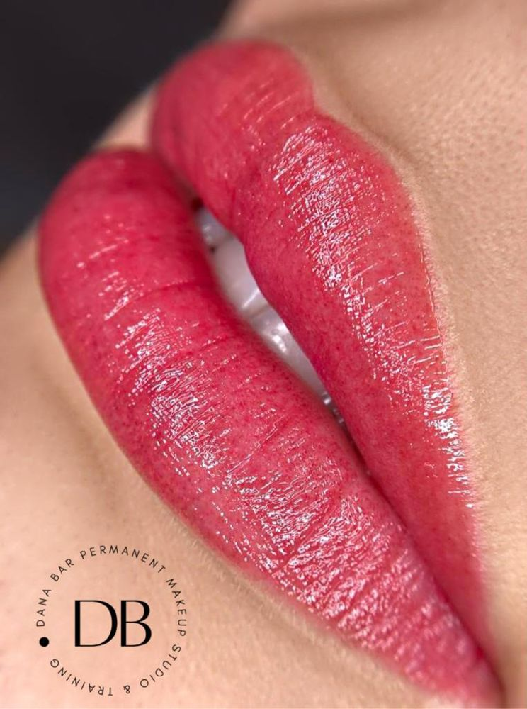
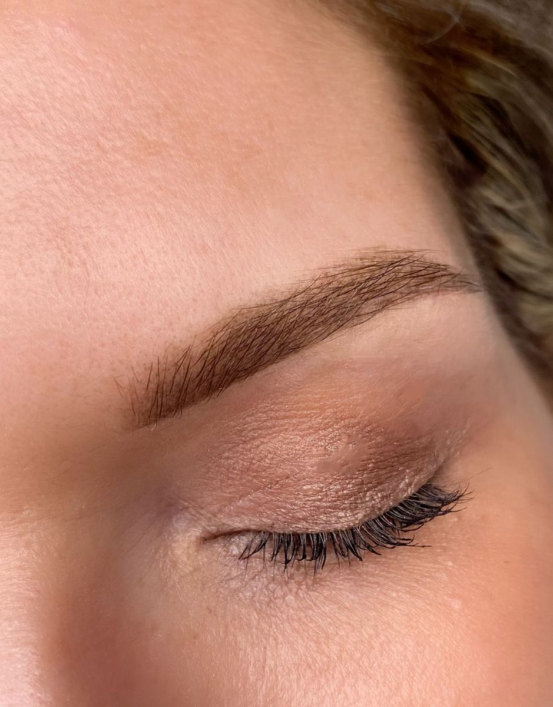
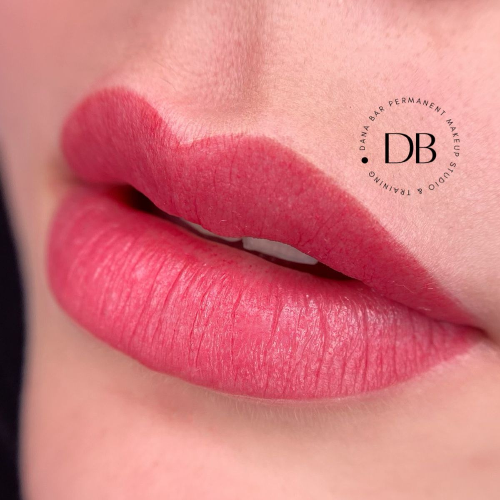
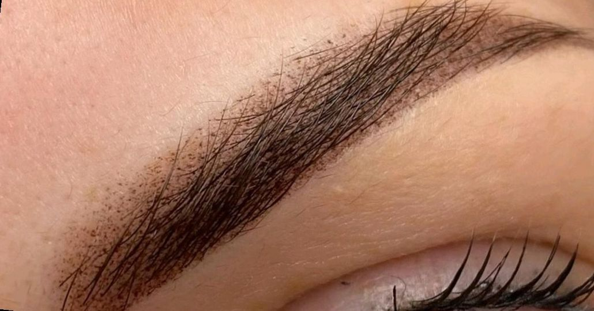
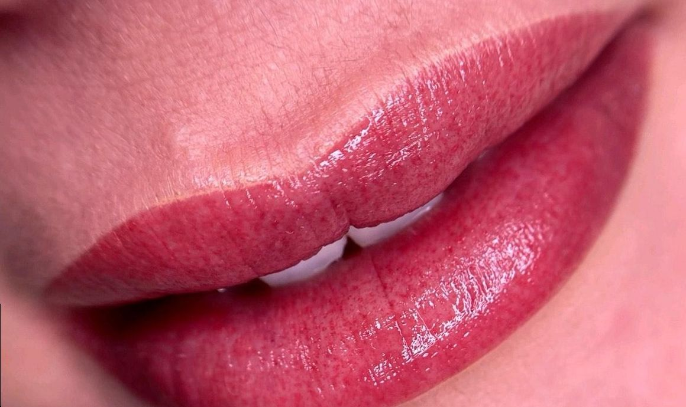
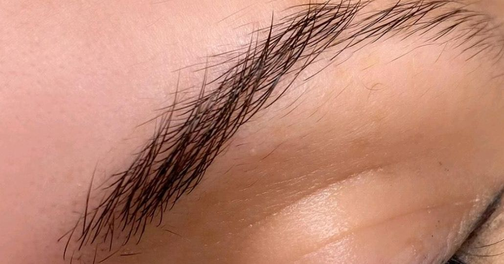
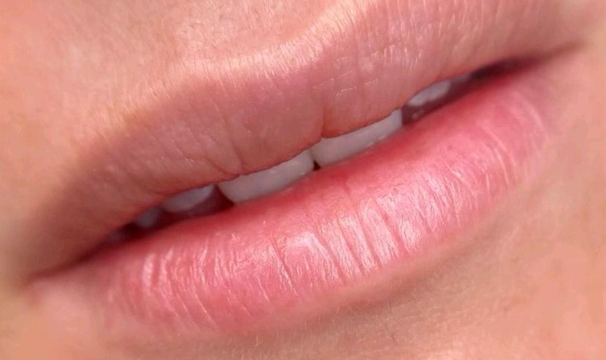

גבותBrows
גוון וצורה שמותאמים לפנים.Shade and shape matched to the face.
קונספט לדוגמה שנבנה עבור דנה בר סטודיו והדרכות לאיפור קבוע · זה אינו האתר הרשמי של העסקA sample concept built for Dana Bar Permanent Makeup Studio & Training · This is not the business’s official website
גבות ושפתיים בסטודיו של דנה, שדרות מוריה 129, חיפה.Brows and lips at Dana’s studio, 129 Moriya Blvd, Haifa.
4.9 בגוגל · 27 ביקורות4.9 on Google · 27 reviews





הטיפול מתחיל בהתאמה: הגוון, הצורה ומבנה הפנים.It starts with matching: the shade, the shape and the face.
״דנה מקצועית, יסודית, ומעשירה את הידע שלה בתחום על בסיס קבוע. היא אנושית וקשובה ודואגת להתאים את האיפור למבנה הפנים ובאופן טבעי״
“Dana is professional, thorough, and keeps enriching her knowledge in the field. She is human and attentive and makes sure the makeup suits the structure of the face, naturally.”
עבודות אמיתיות של דנה. גללו, והגוון נכנס למקומו.Dana’s real work. Scroll, and the shade settles in.

לפניBeforeאחריAfter
לפניBeforeאחריAfterלחיצה ארוכה על תמונה מחזירה ל״לפני״. התמונות: דנה בר סטודיו, מתוך Google Maps.Press and hold a photo to see “before”. Photos: Dana Bar Studio, from Google Maps.
איפור קבוע לגבות ולשפתיים, וגם הדרכות לאיפור קבוע.Permanent makeup for brows and lips, and training in permanent makeup.
גוון וצורה שמותאמים לפנים.Shade and shape matched to the face.
צבע שבוחרים יחד, לפי הגוון שלך.A colour chosen together, for your tone.
טיפול המשך לדיוק הגוון והצורה.A follow-up to refine shade and shape.
הסטודיו מעביר גם הדרכות לאיפור קבוע.The studio also teaches permanent makeup.
ראשון–חמישי 9:00–18:00 · שישי 9:00–12:00Sun–Thu 9:00–18:00 · Fri 9:00–12:00
בוחרים מה מעניין, וההודעה נכתבת מעצמה.Pick what interests you; the message writes itself.
4.9 בגוגל · 27 ביקורות4.9 on Google · 27 reviews
״פשוט אין לי מילים כמה הבחורה מקצועית ופדנטית, התאימה את הצבע המושלם והכי מתאים עבורי!! … שירות אישי ומקצועי!!״
“I simply have no words for how professional and meticulous she is; she matched the perfect colour, the one that suits me best!! … Personal, professional service!!”
״דנה עושה את התהליך חוויה בפני עצמה … השפתיים שלי מושלמות בזכותה וכבר אפשר לזרוק את התוחם״
“Dana makes the process an experience in itself … my lips are perfect thanks to her, and I can already throw away the lip liner.”
״תודה רבה על הטיפול ,היחס הנעים,ההסברים והסבלנות. … התוצאה נהדרת מעל למצופה״
“Thank you so much for the treatment, the pleasant manner, the explanations and the patience. … The result is wonderful, beyond expectations.”
״עשיתי איפור קבוע בגבות ובשפתיים ואין מאושרת ממני.״
“I had permanent makeup on my brows and lips and no one is happier than me.”
ביקורות אמיתיות מגוגל, מצוטטות כלשונן (בקיצור).Real Google reviews, translated from Hebrew and shortened.
שדרות מוריה 129, חיפה129 Moriya Blvd, Haifa
איפור קבוע לגבות ולשפתיים, וגם הדרכות לאיפור קבוע.Permanent makeup for brows and lips, and training in permanent makeup.
ראשון עד חמישי 9:00–18:00, שישי 9:00–12:00, בשבת סגור.Sunday to Thursday 9:00–18:00, Friday 9:00–12:00, closed on Saturday.
בוואטסאפ או בטלפון 052-977-4774. עבודות נוספות יש באינסטגרם של הסטודיו.On WhatsApp or by phone, 052-977-4774. More work is on the studio’s Instagram.